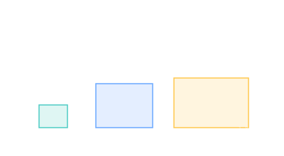

Pressurized Volume
The total habitable interior of a station — how much room the crew actually has to live and work.

101 · zoom in
Every station spec sheet leads with one number: pressurized volume in cubic meters. It's the inside of the modules that crew can breathe inside, summed across the whole station. The ISS comes in at roughly 388 m³ (about the volume of a Boeing 747's passenger cabin). Tiangong comes in at about 110 m³ — comfortable for three crew, tight for six.
Pressurized volume is bounded by two ceilings: launch-vehicle fairing diameter (you can only ship a module as fat as the rocket can lift) and pressure-shell mass (the thicker the wall, the heavier the launch). Modern composite-aluminum hulls hit a sweet spot at 2-4 mm thick. Anything beyond and you're paying mass for safety margin you don't use; anything thinner and a micrometeoroid might puncture you.
Crews need about 14 m³ per person of "net habitable volume" (volume after racks and bulkheads) for missions over a month. ISS and Tiangong both clear this by 3-4× — which sounds excessive until you remember that the crew is awake 16 hours a day, every day, for months on end.
Pressurized volume is the air-filled habitable interior of a space station, measured in cubic meters. It excludes structural racks, bulkheads, and equipment volume — the figure usually quoted is gross internal volume, of which 30-50% is occupied by hardware.
ISS: ~388 m³ across 16 pressurized modules (Zarya, Zvezda, Unity, Destiny, Quest, Pirs/Nauka, Harmony, Columbus, Kibo + ELM, Tranquility, Cupola, Leonardo PMM, Bigelow BEAM, plus the Russian Rassvet and Poisk).
Tiangong: ~110 m³ across three modules (Tianhe core, Wentian and Mengtian labs).
Mir: ~350 m³ at peak (1986–2001) — comparable to ISS in habitable volume but built from heavier-walled modules and an older generation of life-support systems.
The 14 m³/person guideline (NASA-STD-3001 Volume 2) is empirically derived from confined-environment psychology studies dating back to Skylab and the Soviet Salyut programme. Below it, crew well-being and mission performance decline measurably.